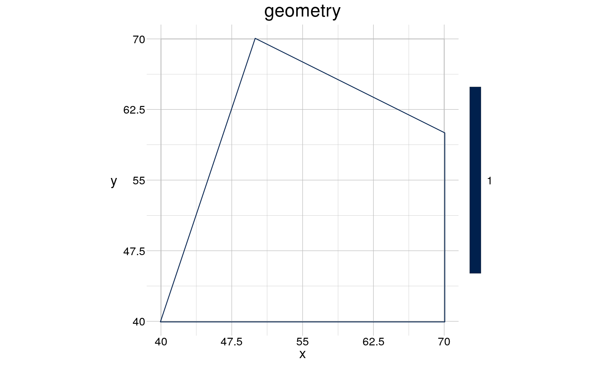
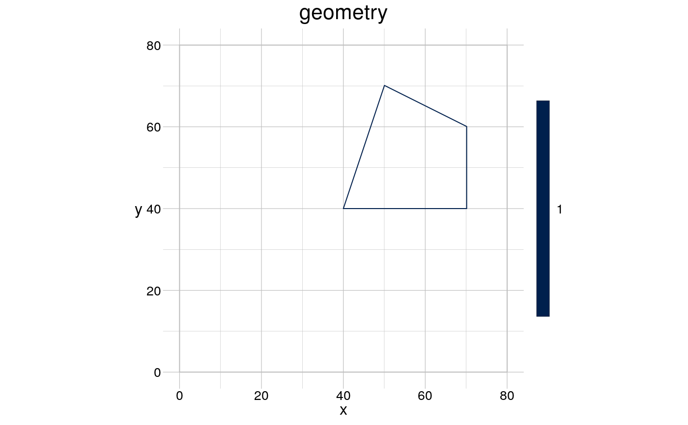

Set the reference window of a spatial object.
# S4 method for ANY setWindow(x) # S4 method for geom setWindow(x, to = NULL) # S4 method for ppp setWindow(x, to = NULL)
| x | the object for which to set a new reference window. |
|---|---|
| to | any suitable data-structure that contains the minimum and maximum values in x and y-dimension to which the reference window shall be set, see Details. |
The object x with an update reference window.
Possible data-structures are
an object of class
Extent,
an object of class bbox,
a table with two columns (named x and y) containing the minimum and maximum values for each dimension.
Other setters:
setCRS(),
setFeatures(),
setGroups(),
setHistory()
# create a polygon programmatically coords <- data.frame(x = c(40, 70, 70, 50), y = c(40, 40, 60, 70)) (aGeom <- gs_polygon(anchor = coords))#> geom polygon #> 1 group | 1 feature | 5 points #> crs cartesian #> attributes -- #> tiny map 70 #> ◌ ◎ ◌ ◌ #> ◌ ◌ ◌ ◎ #> ◌ ◌ ◌ ◌ #> 40 ◉ ◌ ◌ ◎ 70 #> 40#> geom polygon #> 1 group | 1 feature | 5 points #> crs cartesian #> attributes -- #> tiny map 80 #> ◌ ◌ ◎ ◎ #> ◌ ◉ ◉ ◉ #> ◌ ◉ ◉ ◎ #> 0 ◌ ◌ ◌ ◌ 80 #> 0#> Planar point pattern: 15 points #> window: rectangle = [0, 2] x [0, 2] units